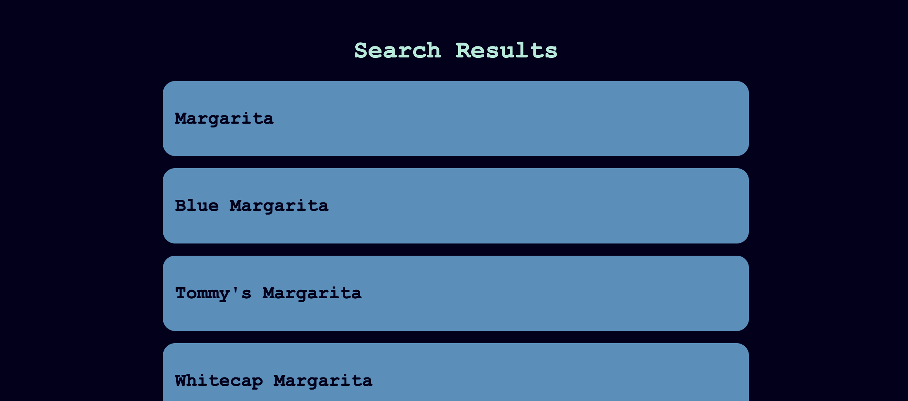
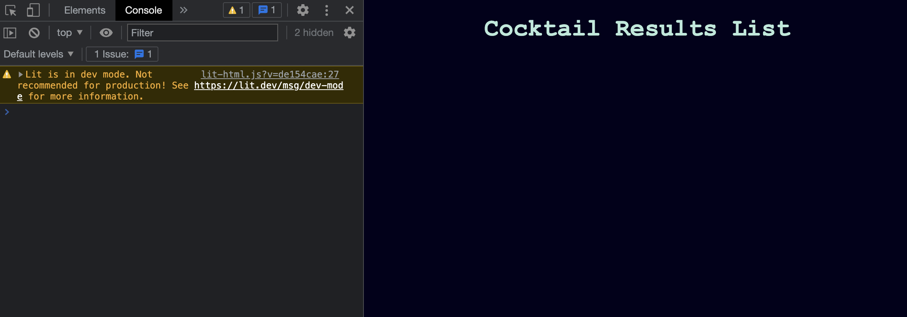

FP1: Prototype
Overview and Usage
This is a working prototype for a cocktail app. Currently, it only allows the user to search for drinks based on a search query. This prototype does not feature all of the functionality that is planned for the final build. It is, however, a MVP that shows that the application has been deployed, is making API calls, and generating an HTML output. Live prototype. Repo with code.
Development Process
I began by working through Hannah’s “example-fetch” example and basically playing with the code using console.log() to test was happening at particular places in the code. This allowed me to understand how to make API calls, format the result into JSON, and then use the JSON to generate an HTML template containing information from the API (see image below for what the app looked like at this stage).  I then changed the API being called to the Cocktail API, which is the API my app will use. Once the code was calling the API correctly, I added a search bar and button to allow users to enter the search query (I had previously been hard-coding it in the JS).Issue Deep-Dive
One major issue that I encountered was getting the fetch function to properly call the Cocktail API. This resulted in nothing loading on the HTML, except for the title. This problem persisted for quite some time.  Honestly, I don’t know how I got it to work. I just played with the code and then googled what the error messages meant. I also used ChatGPT to explain to me what certain lines of code were doing, which did help me understand what was happening.Future Work
Obviously, this prototype is far from being done. I still have a lot to add, but I want to focus on getting the bare-bones HTML and JS working so that I can then focus on styling it with CSS. My proposal details everything I plan on incorporating.Kudos
I would like to give major kudos to Hannah, whose code I used as the foundation for my app. I would also like to give Kudos to Frannie and Arissa, who informed me that vite did not require rollup. I was very confused about this, so it was very appreciated.Project Scope
The overall project concept has not changed. I still want the application to do the same things, i.e., still a search engine for cocktail recipes with a focus on the ingredients in the drinks. However, I quickly realized that my development approach was flawed. I did not know how to make API calls using JS and my currently knowledge of how that is done has changed how I will continue to develop the application.Time Management
I have spent significantly more time simply getting the MVP to work than I initially anticipated. Collecting the search query via the HTML, transmitting that to the API, accessing the relevant information inside the JSON, and then exporting it back to the HTML was much harder than I thought. Now that I understand those components work, I have a better understanding of much time I will need to complete the project.Implementation Plan
As previously mentioned, my approach to development was incorrect and forced me completely rethink the process. I now have a better understanding of what I need to do:- Establish link between search results and results page
- Generate recipe HTML pages
- Format everything in mobile-friendly CSS